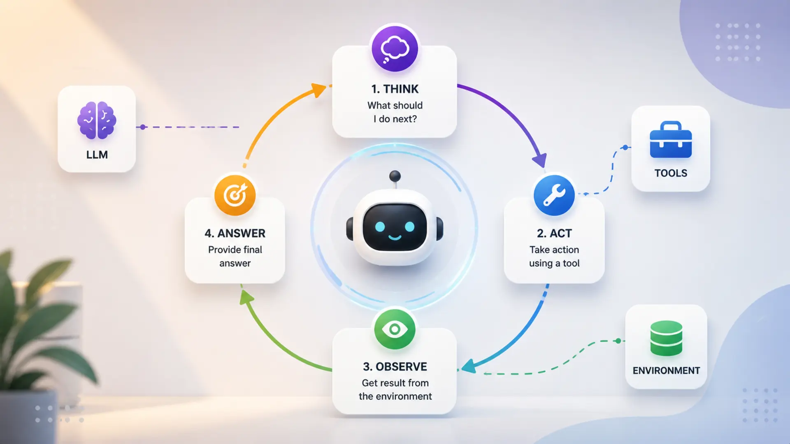
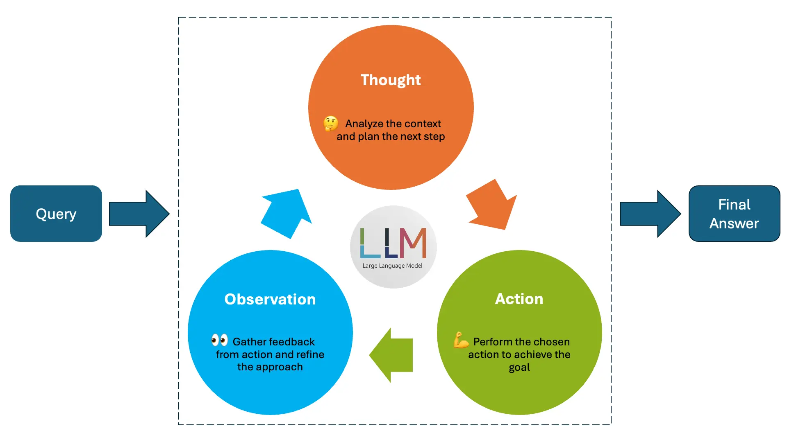
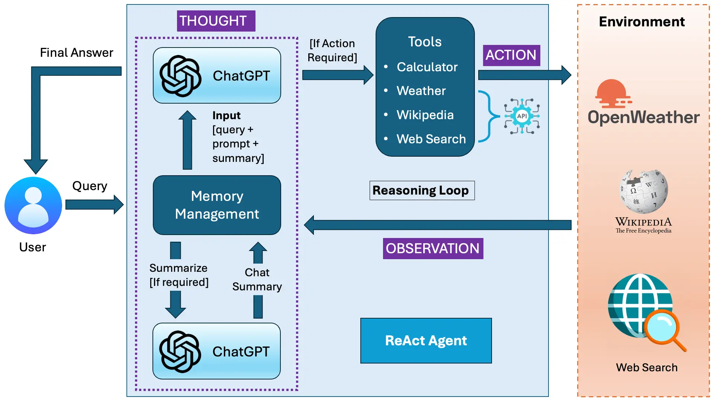
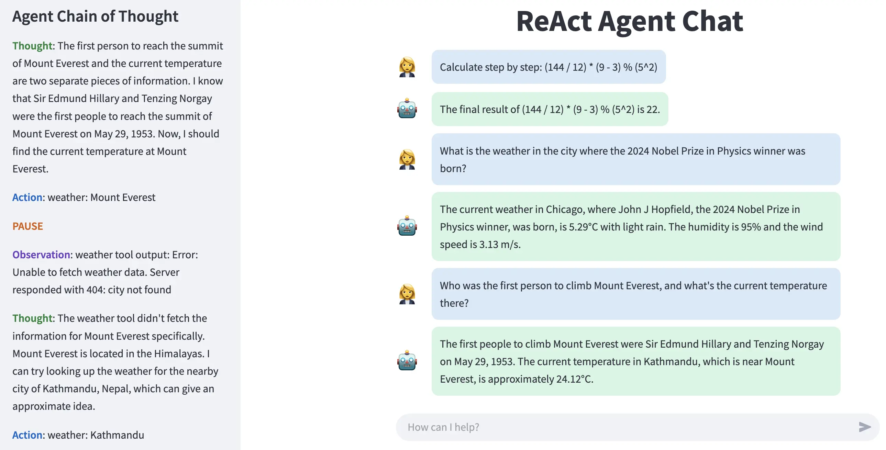

Create ReAct AI Agent from Scratch using Python Without any Framework: A Step-by-Step Guide

Artificial Intelligence (AI) agents are transforming the way we interact with technology. From chatbots to research assistants, these agents automate tasks, answer questions, and even make decisions. Among them, ReAct AI Agents stand out because they think, act, and refine their responses dynamically, making them far more effective than traditional AI models.
💡 But why build a ReAct AI Agent from scratch without using any framework?
Popular frameworks like LangChain and LlamaIndex offer pre-built implementations, making development easier. However, they also abstract away critical logic, limiting your understanding and control over the agent's decision-making. By building it from scratch, you will:
- Learn how ReAct AI agents work at a deep level.
- Gain full control over reasoning, memory, and actions.
We'll break down the fundamentals of AI agents and explain how ReAct agents differ from traditional models. Then, we'll implement a fully functional ReAct AI Agent step by step, including an interactive Streamlit web app for real-time interactions.
📚 Table of Contents
- Introduction
- Inside the ReAct Agent: A Step-by-Step Breakdown
- Architecture of the ReAct Agent System
- Setting Up the Project
- Understanding the Message Class
- Designing Effective Prompts for the Agent
- Building Tools for the Agent
- Memory Management
- Implementing the Core Agent
- Creating a Web Interface
- Examples
- Conclusion
1. Introduction
As AI technology advances, we are seeing a shift from rule-based automation to intelligent, adaptive systems that can reason and take actions. AI agents have evolved from simple chatbots and automation scripts into powerful decision-making systems that process information, retrieve external knowledge, and solve complex problems. However, many AI agents still operate on predefined workflows, limiting their ability to adapt dynamically to new situations.
This is where ReAct AI Agents stand out. Unlike traditional AI models that simply return direct answers, ReAct agents actively think, take actions, and refine their responses in real-time. This guide focuses on building a ReAct AI Agent from scratch, without using any framework, ensuring complete control over its design and behavior.
Before we dive into the implementation, let's explore what AI agents are, how ReAct agents differ from traditional ones, and why developing one from the ground up is valuable.
🤖 What is an AI Agent?
An AI agent is a system designed to perceive its environment, process information, and take actions to achieve a goal. AI agents are widely used in applications ranging from customer support chatbots to self-driving cars. However, the way they operate and make decisions varies depending on their complexity.
There are different types of AI agents, each with unique capabilities. While some agents operate on fixed rules and cannot learn or adapt, others incorporate reasoning and decision-making to solve complex tasks.
🧠 Types of AI Agents (Brief Overview)
- 1️⃣ Reactive Agents — These agents follow predefined rules and respond only to current inputs without considering past events. Example: A chatbot that provides scripted responses based on keyword matching.
- 2️⃣ Model-Based Agents — These agents maintain an internal representation of the world, allowing them to make informed decisions based on past states. Example: A self-driving car predicting obstacles on the road.
- 3️⃣ Goal-Oriented Agents — These agents focus on achieving a specific objective by planning multiple steps ahead. Example: A chess-playing AI that calculates potential moves before making a decision.
- 4️⃣ Learning Agents — These agents improve over time by learning from past experiences and adjusting their behavior accordingly. Example: A recommendation system that suggests content based on user preferences.
Most traditional chatbots fall under reactive agents, retrieving responses based on predefined logic. However, ReAct AI Agents go beyond this, integrating reasoning and action in a continuous loop to dynamically solve multi-step problems.
🔄 What is a ReAct Agent?
A ReAct (Reasoning + Acting) AI Agent is a system that doesn't just retrieve static responses but actively thinks, takes actions, and refines its answers dynamically. Unlike traditional AI agents that provide direct answers, ReAct agents process problems step by step, ensuring more accurate and well-informed responses.
ReAct AI Agents excel at handling multi-step tasks that require reasoning and decision-making.
📌 Example Scenario: "What's the weather in the city where the 2024 Nobel Prize winner in Physics was born?"
A traditional chatbot might struggle, as it requires: (1) Find the Nobel Prize winner → (2) Identify their birthplace → (3) Retrieve the current weather.
A ReAct Agent follows a structured loop: Thought → Action → Observation → Thought → Action → Observation → Final Answer.
This step-by-step reasoning process makes ReAct AI Agents more intelligent, adaptable, and capable of handling complex queries.
🔬 How ReAct Differs from Other AI Agents
Unlike traditional AI models that rely on static response generation, ReAct AI Agents actively engage in reasoning, take actions, and refine their answers dynamically.
| Feature | Traditional AI Agents | ReAct AI Agents |
|---|---|---|
| Answer retrieval | Direct response | Step-by-step reasoning |
| Decision-making | Limited or rule-based | Adaptive and context-aware |
| Tool usage | Static, predefined queries | Uses APIs (Wikipedia, web search, weather, calculator) |
| Self-correction | No | Yes, adjusts responses based on observations |
While a traditional AI model might simply return an answer based on existing knowledge, a ReAct Agent actively interacts with external tools to fetch the most accurate and up-to-date information. This makes ReAct AI Agents particularly useful for research, data-driven applications, and real-time problem-solving.
🛠️ Why Build One from Scratch Without a Framework?
Many AI developers rely on frameworks like LangChain or LlamaIndex to implement ReAct-based systems. While these frameworks provide useful abstractions, they also introduce limitations by hiding the core logic behind predefined components.
Building a ReAct AI Agent from scratch offers several advantages:
- Deeper Understanding — Developers gain insights into the internal workings of the ReAct model.
- Full Customization — The agent's reasoning, tool usage, and memory management can be tailored to specific needs.
- Performance Optimization — Removing unnecessary framework overhead allows for better efficiency.
- Complete Control — Developers can fine-tune every aspect of the agent's behavior without framework constraints.
By implementing a ReAct AI Agent manually, we ensure that every part of the system — from reasoning logic to action execution — is transparent and fully customizable. This is crucial for those who want complete flexibility in designing and optimizing their AI solutions.
2. Inside the ReAct Agent: A Step-by-Step Breakdown
AI agents have evolved beyond simple question-answering systems, becoming more sophisticated in reasoning, decision-making, and tool usage. Among them, the ReAct agent stands out for its structured approach to problem-solving. Unlike traditional AI models that generate direct responses based on pre-trained knowledge, the ReAct agent follows a dynamic process—breaking down queries, taking actions, and refining answers based on observations.
This section explores how the ReAct agent operates, focusing on its structured Thought, Action, PAUSE, and Observation loop. By understanding this core mechanism, we can see how the agent thinks critically, executes tasks intelligently, and improves its responses iteratively. Through this breakdown, we will highlight each step of the loop, demonstrating how different components of the ReAct agent interact to form a robust and adaptable AI system.
Now, let's dive into the step-by-step process that powers the ReAct agent. 🚀
Thought, Action, PAUSE, and Observation Loop
The ReAct agent operates through a structured cycle that enables it to think, act, and refine its responses iteratively. This mechanism allows it to break down complex queries, execute relevant actions, and continuously refine its understanding based on observations.

Figure 1 : ReAct Agent Loop - Thought, Action and Observation
The Figure 1 demonstrates ReAct agent loop which include Thought, Action and Observation. Below is a detailed explanation of each step of the ReAct agent loop.
1. Thought 🧠 - The Agent's Reasoning Process
The Thought phase is where the agent processes the user's input, analyzes it, and determines the best course of action. Unlike simple AI assistants that generate a direct response from a static knowledge base, a ReAct agent thinks step by step, identifying what information is available and what needs further exploration.
In this phase, the agent:
- Reads and understands the user's query.
- Breaks down complex requests into smaller logical steps.
- Decides which tool or approach will best answer the query.
For example, suppose a user asks:
Who discovered the law of gravity, and what is the weather in the city where he was born?
A traditional AI might attempt to generate an answer immediately. However, the ReAct agent thinks first:
- I need to find out who discovered the law of gravity.
- Once I have that, I need to determine the birthplace of this person.
- Then, I will check the weather in that city.
By structuring its approach this way, the agent ensures it retrieves accurate and complete information, avoiding errors from premature assumptions.
2. Action ⚡ - Executing the Required Task
Once the agent has formulated a thought process, it moves to the Action phase. This is where it executes an operation to retrieve or compute information. Actions involve using external tools such as:
- Wikipedia 📚 – for retrieving general knowledge.
- Web search 🔍 – for real-time or less commonly known information.
- Weather API 🌦️ – for checking weather conditions.
- Calculator ➗ – for performing mathematical operations.
Each action follows a structured format:
Action: <tool_name>: <query>
For mathematical operations, the format is JSON-based:
Action: calculator: {"operation": "add", "params": {"a": 5, "b": 3}}
Example: Continuing with our previous query:
Who discovered the law of gravity, and what is the weather in the city where he was born?
After reasoning, the agent executes an action:
Action: wikipedia: "Who discovered the law of gravity?"
This action triggers a Wikipedia search to retrieve relevant information.
If the user had asked a math-related question, such as:
What is (25 + 75) / 2?
The agent would break it down:
Thought: "I need to add 25 and 75 first."
Then, it executes an action:
Action: calculator: {"operation": "add", "params": {"a": 25, "b": 75}}
After completing an action, the agent pauses and waits for a response.
3. PAUSE ⏸️ - Waiting for the Result
The PAUSE phase is unique to the ReAct approach. Many traditional AI agents simply execute commands and move to the next step without verifying if the retrieved information is correct or complete. In contrast, a ReAct agent pauses after each action and waits for an observation before deciding what to do next.
This phase ensures:
- The agent does not assume an action was successful without verifying the result.
- It can adapt dynamically based on the outcome.
- The agent avoids making premature conclusions.
Example: Imagine the agent performed the Wikipedia search:
Action: wikipedia: "Who discovered the law of gravity?"
PAUSE
At this point, the agent does not proceed immediately. Instead, it waits for an observation (the retrieved information) before deciding the next step.
In the case of the math query:
Action: calculator: {"operation": "add", "params": {"a": 25, "b": 75}}
PAUSE
The agent waits for the calculator tool to return 100 before deciding the next action.
This approach prevents cascading errors, where an incorrect assumption early in the process could lead to a completely wrong answer.
4. Observation 👀 - Evaluating the Results
Once an action is completed, the agent receives an Observation. This is the actual result from the executed action. The agent then evaluates whether:
- The retrieved information is sufficient to answer the query.
- Further steps or additional actions are needed.
- There are errors or missing details that require corrections.
Example: The Wikipedia search returns:
Observation: "Sir Isaac Newton discovered the law of gravity."
Now, the agent reanalyzes the query and determines:
- Now I need to find out where Newton was born.
- I should perform another Wikipedia search.
Thus, the agent loops back to the Thought phase:
Thought: "I need to check Isaac Newton's birthplace."
Action: wikipedia: "Isaac Newton birthplace"
PAUSE
Once it retrieves "Woolsthorpe, England", the agent thinks again:
Now I need to check the weather in Woolsthorpe.
So, it takes another action:
Action: weather: "Woolsthorpe, England"
PAUSE
Once it gets the final weather report, it forms the final answer.
🔄 Full Example: Thought, Action, PAUSE, Observation Loop
Let's see the entire loop for our initial question:
User Query: "Who discovered the law of gravity, and what is the weather in the city where he was born?"
Agent Execution:
1. Thought 🧠
"I need to find out who discovered gravity first."
2. Action ⚡
Action: wikipedia: "Who discovered the law of gravity?"
3. PAUSE ⏸️
(Agent waits for the response.)
4. Observation 👀
Observation: "Sir Isaac Newton discovered the law of gravity."
5. Thought 🧠
"Now I need to find out where Newton was born."
6. Action ⚡
Action: wikipedia: "Isaac Newton birthplace"
7. PAUSE ⏸️
8. Observation 👀
Observation: "Isaac Newton was born in Woolsthorpe, England."
9. Thought 🧠
"Now I need to check the weather in Woolsthorpe."
10. Action ⚡
Action: weather: "Woolsthorpe, England"
11. PAUSE ⏸️
12. Observation 👀
Observation: "The current temperature in Woolsthorpe, England is 10°C."
13. Final Answer: ✅
"Sir Isaac Newton discovered the law of gravity. He was born in Woolsthorpe, England. The current temperature there is 10°C."
🔑 Key Components of a ReAct Agent
A ReAct agent operates through an iterative reasoning process that allows it to think, act, and refine its responses based on observations. Unlike traditional AI systems that rely on predefined workflows, a ReAct agent is adaptive, dynamic, and capable of interacting with external tools to retrieve or compute real-time data.
To function effectively, a ReAct agent consists of several key components, each playing a crucial role in its decision-making and execution process. Below, we explore the essential components that power a ReAct agent.
1️⃣ Large Language Model (LLM) 🏗️ – The Core Reasoning Engine
At the heart of a ReAct agent lies a Large Language Model (LLM), such as GPT-4, Claude, or LLaMA, which enables reasoning and decision-making. Unlike traditional AI agents that retrieve answers from a static knowledge base, an LLM allows the ReAct agent to analyze, plan, and break down complex queries into structured steps.
🔍 What the LLM Does:
- Understands user queries and determines necessary actions.
- Generates reasoning chains to decide which steps to take next.
- Processes observations dynamically, ensuring iterative improvement.
💡 Example:
User Query: "Who discovered the law of gravity, and what is the population of the country where he was born?"
The LLM recognizes two separate tasks:
- Find out who discovered gravity (Wikipedia search).
- Find out the country of birth of that person.
- Retrieve the population of that country (another Wikipedia search).
Instead of responding immediately, the agent plans a sequence of actions and executes them step by step.
2️⃣ Tools (Actions) 🛠️ – Enabling External Capabilities
A ReAct agent is not limited to its internal knowledge—it can extend its capabilities by interacting with external tools. These tools allow the agent to retrieve real-time data, perform calculations, or gather missing information dynamically.
🔧 Common Tools Used in a ReAct Agent:
- Wikipedia API 📚 – Retrieves general knowledge.
- Web Search 🔍 – Fetches up-to-date real-world information.
- Weather API 🌦️ – Checks the latest weather conditions.
- Calculator ➗ – Solves mathematical computations.
⚙️ How the Agent Uses Tools:
- The LLM determines when a tool is necessary based on the query.
- It generates an action request, specifying which tool to use.
- The agent pauses until the tool provides a response.
- Once the observation is received, it evaluates whether further actions are needed.
💡 Example:
User Query: "Who won the most recent FIFA World Cup, and what is the weather in the winning team's capital city?"
The agent executes:
- Wikipedia search to find the latest FIFA World Cup winner.
- Extracts the country name from the result.
- Wikipedia search for the country's capital.
- Weather API query to retrieve the weather in that city.
By using tools iteratively, the agent fetches and refines real-world data in real time.
3️⃣ Memory 🧠 – Retaining Context for Better Reasoning
To provide meaningful responses, a ReAct agent needs memory—a mechanism to retain past interactions, retrieved information, and tool results. Unlike traditional AI models that treat each query independently, memory allows the agent to remember context across multi-step conversations.
🔍 Functions of Memory in a ReAct Agent:
- Stores past interactions to maintain continuity in conversations.
- Prevents redundant queries by remembering previously retrieved information.
- Helps compare and analyze past and present data points.
💾 Short-Term vs. Long-Term Memory:
- Short-Term Memory (Session-Based) – Remembers interactions only within the active session.
- Long-Term Memory (Persistent Storage) – (Optional) Stores knowledge that persists across different sessions.
📏 Token Management for Chat Summary
Since LLMs have a maximum token limit, a ReAct agent must efficiently manage stored messages to ensure continuity. Token management is a crucial sub-component of memory, ensuring the agent does not exceed token constraints while retaining relevant context.
⚙️ How Token Management Works:
- The agent tracks the number of tokens used in messages.
- If the conversation exceeds the token limit, older interactions are summarized to fit within constraints.
- The summary prompt condenses earlier interactions while retaining important details.
- The 'tiktoken' library is commonly used to estimate and optimize token usage.
💡 Example:
Scenario: If an agent has a 4096-token limit, and the conversation exceeds this limit, the system will:
- Summarize the earliest messages.
- Retain only key details while discarding redundant content.
- Ensure that the latest interactions remain fully intact for accurate responses.
Memory and token management together ensure that the agent remembers important details while operating within constraints.
4️⃣ Prompt Engineering 📜 – Structuring Thought-Action-Observation
A ReAct agent relies on structured prompts to guide its reasoning and execution, ensuring it follows the Thought-Action-Observation loop correctly. These prompts define how the agent processes queries, interacts with tools, and structures its outputs.
📝 Key Prompts Used in a ReAct Agent:
1️⃣ System Prompt
- Defines the core rules for the agent's behavior.
- Guides the step-by-step reasoning process (Thought → Action → PAUSE → Observation).
- Specifies when to use tools and how to structure final answers.
2️⃣ Summary Prompt
- Helps condense previous interactions when memory reaches a limit.
- Ensures the agent retains context without exceeding token constraints.
❓ Why Prompt Engineering is Critical:
- Poorly structured prompts can lead to inaccurate, inconsistent, or superficial responses.
- Well-designed prompts enhance decision-making by enforcing structured reasoning.
💡 Example (System Prompt Snippet):
You are an AI assistant who follows a step-by-step reasoning process.
You think, take actions when needed, and refine your response based on observations.
You run in a loop of Thought, Action, PAUSE, and Observation until you obtain a final answer.
At the end of the loop, you must output a Final Answer.
This ensures that the agent never skips steps and always verifies information before responding.
3. Architecture of the ReAct Agent System
The ReAct agent is designed to think, act, observe, and refine its responses dynamically by leveraging reasoning, memory management, external tools, and interactions with the environment. This architecture enables it to solve complex queries, retrieve external data, and generate intelligent answers in a structured manner.

Figure 2 : Architecture of ReAct Agent System
Figure 2 shows the overall architecture of our ReAct agent. The following breakdown explains the entire workflow step by step, ensuring a deep understanding of how each component operates and interacts.
🔍 Breakdown of the ReAct Agent Architecture
The architecture of the ReAct agent consists of six major functional components:
- User Input and Query Processing
- Thought Process (Reasoning & Memory Management)
- Action Execution (Tool Invocation)
- Interacting with the Environment (APIs & Data Retrieval)
- Observation and Reasoning Loop
- Final Answer Generation
1️⃣ User Input and Query Processing
The process starts when the user submits a query to the ReAct agent. The query can be of different types, such as:
- General knowledge questions (e.g., "Who invented the telephone?")
- Mathematical computations (e.g., "Calculate (15 x 4) + (30 ÷ 5)")
- Real-time information requests (e.g., "What is the current weather in New York?")
- Multi-step queries that require tool usage (e.g., "Find the latest Mars exploration news and check the weather in the city where the latest mission was launched.")
Once the user submits a query, the agent processes it to determine whether to answer directly, retrieve context from memory, or call an external tool.
🔍 How the Query is Processed
- The raw query is received by the agent.
- The Memory Management system checks if there is relevant context from previous interactions.
- The query is structured and prepared as input to ChatGPT for further reasoning.
At this stage, the agent does not take action yet—it first determines what needs to be done.
2️⃣ Thought Process (Reasoning & Memory Management)
The thought process is the core of the ReAct agent's reasoning. This step analyzes the query and decides whether an external action (such as calling a tool) is necessary.
🔍 Components of Thought Processing
- ChatGPT's Role: The agent uses ChatGPT to break down the query logically.
-
Memory Management:
- If the query requires context from previous interactions, the system fetches stored memory.
- If needed, the system summarizes past interactions and feeds them into ChatGPT for better understanding.
🔍 How It Works
-
Input Preparation:
The system structures the input as:
query + prompt + summary (if applicable)
Example:
User Query: "Who won the 2024 Nobel Prize in Physics?"
Processed Input:"User asked about the 2024 Nobel Prize in Physics. Fetch information from Wikipedia." -
Thought Processing:
The system analyzes whether it already knows the answer or if an external tool is required.
Example:
- If the answer is available internally, the agent responds immediately.
- If external data is required, it proceeds to the Action Execution stage.
3️⃣ Memory Management and Token Handling
Since Large Language Models (LLMs) have a maximum token limit, managing conversation history effectively is critical. The ReAct agent ensures long-term memory retention while adhering to the token constraints by using a memory summarization strategy.
🔍 How the Agent Handles Memory
1. Storing Past Conversations
The system keeps track of previous interactions, storing details such as:
- User's past queries
- Agent's responses
- Tool outputs (observations)
This allows the agent to reference past exchanges, making conversations feel more natural.
2. Token Limit Handling
When the conversation exceeds the token limit, the agent follows a structured process:
- Summarization: It extracts the most relevant information from previous messages.
- Deleting Old Messages: Once summarized, the original messages are removed to free up space.
- Maintaining Key Information: The agent keeps a chat history summary instead of raw exchanges.
3. What is Passed to ChatGPT?
The agent passes a structured input to the LLM, including:
- Chat Summary (a compact form of prior interactions).
- User's Current Query.
- Observations from External Tools (if used).
- Agent's Own Thought Process.
4️⃣ Interacting with the Environment (APIs & Data Retrieval)
🌍 What is the Environment?
The environment consists of external data sources that the agent interacts with. These include:
- Weather API (OpenWeather) → Fetches real-time weather updates.
- Wikipedia API → Retrieves factual knowledge.
- Web Search API → Provides the latest online search results.
- Calculator Tool → Performs mathematical computations.
🔍 How the Agent Uses APIs to Retrieve Data
- Determining the Required Tool
- Executing API Requests
- Receiving and Processing API Responses
- Passing Data to the LLM for Observation
5️⃣ Observation and Reasoning Loop
Once the agent retrieves external data, it evaluates whether the response is complete or if additional actions are needed.
🔍 How the Observation Process Works
- Tool Execution Completes → The tool provides data.
-
The Agent Evaluates the Response:
- Is the response complete, or is more information needed?
- Does the response answer the user's query fully?
-
If More Information is Required, the agent:
- Calls another tool if necessary.
- Refines the query and repeats the Thought-Action-Observation loop.
If all necessary information is gathered, the agent proceeds to final answer generation.
6️⃣ Final Answer Generation
After gathering and processing all required information, the agent constructs the final response in a human-readable format.
📝 Steps for Answer Finalization
- Combining Observations → If multiple tools were used, the agent merges the results.
- Summarization → If the response is too long, the system summarizes key points.
- Formatting the Answer → The response is structured for clarity and easy understanding.
💡 Example Final Answer
User Query: "What is the weather in the city where the 2024 Nobel Prize in Physics winner was born?"
Processing Steps:
- Step 1: Fetch Nobel Prize winner (Wikipedia API).
- Step 2: Extract birthplace from Wikipedia.
- Step 3: Fetch weather in that location (Weather API).
- Step 4: Merge results and generate the final response.
Final Answer Example:
The 2024 Nobel Prize in Physics was awarded to Dr. John Smith. He was born in Stockholm, Sweden.
The current temperature in Stockholm is 12°C with clear skies.
4. Setting Up the Project
Setting up the ReAct Agent involves organizing the project files, installing dependencies, and configuring environment variables. This section walks you through the essentials to get your development environment ready.
📁 Project Structure and Dependencies
The project follows a clean modular structure that separates prompts, tools, utility functions, and core logic. Below is an overview of the folder layout:
🗂 Key Directories & Files
- prompts/ — Prompt templates for summarization and system behavior.
- tools/ — Contains all functional tools (calculator, Wikipedia, weather, etc.).
- utils/ — Utility functions, including message formatting.
- .env — Stores API keys and credentials securely.
- agent.py — Core implementation of the ReAct agent.
- web_app.py — Web interface for interactive usage.
- requirements.txt — List of required Python libraries.
🐍 Python Version & Virtual Environment Setup
Ensure you are using Python 3.8 or higher. It's highly recommended to use a virtual environment for clean and isolated dependency management.
🔧 Steps to Set Up
-
Create a virtual environment:
python -m venv venv
-
Activate the environment:
-
macOS/Linux:
source venv/bin/activate
-
Windows:
venv\Scripts\activate
-
macOS/Linux:
-
Install dependencies:
pip install -r requirements.txt
📋 Example requirements.txt
- openai - Interface to LLMs
- flask - Lightweight web framework
- requests - For HTTP API calls
- python-dotenv - Loads environment variables from .env
- beautifulsoup4 - Parses web search responses
- wikipedia-api - Fetches structured Wikipedia data
- tiktoken - Manages tokenization and limits
- colorama - Adds color to terminal output
📌 Configuring Environment Variables
To securely store API keys and credentials, we use a .env file.
🛠 Setting Up the .env File
Create a .env file in the root directory:
touch .env
Open the file and add your credentials:
Load the .env file in Python:
This ensures sensitive credentials stay out of your codebase and version control system.
5. Understanding the Message Class
In the heart of the ReAct agent architecture, the Message class plays a subtle but powerful role. While it may appear simple at first glance, it is critical for maintaining the agent's reasoning flow and conversation history.
🔧 What is the Message Class?
This class defines a message as an object containing two attributes:
- role: identifies who the message is from (e.g., "user", "assistant", or "system")
- content: the actual message or thought, such as a user query, an agent's internal thought, or a final answer
Despite its simplicity, this structure is the backbone of how the agent communicates with itself and with the user.
🎭 role: Who is speaking?
The role attribute helps differentiate between different types of participants or internal processes:
- 🧑 User: the original query from the user
- 🤖 Assistant: the model's response or output
- 🛠️ Tool/Agent Thought: intermediate reasoning like "Thought", "Action", "Observation", etc.
By tagging each message with a role, the agent can keep the context organized and ensure that prompts sent to the language model are coherent and well-structured.
🗒️ content: What is being said or done?
The content holds the actual string of information relevant to that message. Examples include:
- A user asking: "What is the capital of France?"
- An agent thinking: "I need to look up France on Wikipedia."
- An action like: "wikipedia: France"
- An observation: "France is a country in Western Europe..."
Every single step the agent performs is captured in this field, forming a clear, chronological log of reasoning and execution.
🧩 How the Message Class is Used in the Agent
Inside agent.py, messages are appended to a list that acts as the conversation history. For each loop in the ReAct reasoning process, the agent creates a new Message object with an appropriate role and content, and adds it to the list.
For example:
- After receiving a query, the agent creates a message with role = "user" and the user input as content.
- When the agent thinks or decides on an action, it logs that with role = "assistant" or "system" depending on the design.
- After calling a tool and receiving a result, that result is logged as another message, helping build up the next input to the LLM.
This list of messages is also used to dynamically construct prompts that the model sees. By feeding the model a chronological sequence of thoughts, actions, and observations, the agent enables the LLM to maintain context and make informed decisions.
🔄 Why the Message class is needed
Without the Message class, the agent would lose track of how it arrived at a decision. The loop would become opaque, and it would be harder to debug or extend. Here's what the class enables:
- Transparent reasoning (every step is visible)
- Dynamic prompt construction (based on message history)
- Tool invocation tracking (actions and observations logged)
- Seamless user-agent interaction history
In short, the Message class is the memory system that powers the ReAct agent's intelligence.
6. Designing Effective Prompts for the Agent
In a ReAct-based agent, prompts act as the control center — defining how the agent reasons, acts, and communicates. Instead of giving vague instructions, we design explicit, modular, and readable prompts that enforce a disciplined reasoning flow.
Two key prompt files are used for this system:
- system_prompt.txt — guides the agent through the Thought-Action-Observation reasoning loop.
- summary_prompt.txt — enables the agent to summarize tool-based conversations clearly and concisely.
🔍 Understanding the Role of Prompts in the ReAct Agent
Prompts in a ReAct agent are more than textual instructions — they're architectural blueprints that shape the agent's cognition and behavior. They:
- Control how the agent performs reasoning steps.
- Dictate when and how tools are used.
- Define how final answers are produced.
- Enable retrospective summarization of long conversations.
This separation of reasoning logic and summary logic into two cleanly structured prompts ensures the agent is both a disciplined thinker and a clear communicator.
🔁 system_prompt.txt – Structuring the Thought-Action-Observation Loop
The system_prompt.txt defines the agent's reasoning protocol. It tells the agent how to think, when to pause, and how to use tools step by step to arrive at accurate answers. Instead of letting the model generate freeform responses, this prompt establishes a deterministic reasoning framework built around a loop of reasoning, action, and verification.
It begins with a directive that sets the tone:
"You are an AI assistant who follows a step-by-step reasoning process to determine the best answer."
🧠 Core Reasoning Loop
The agent must operate in this fixed pattern:
"You run in a loop of Thought, Action, PAUSE, and Observation until you obtain a final answer."
- Thought: The agent reflects on the next logical step.
- Action: It calls a tool like calculator, wikipedia, or weather.
- PAUSE: It waits for the result.
- Observation: It receives and processes the result.
The cycle repeats until the agent delivers a clear Final Answer. This ensures completeness, consistency, and transparency in every exchange.
📐 Action Formatting and Tool Usage
The prompt enforces strict rules for calling tools:
For general tool use:
Action: wikipedia: Nikola Tesla
For math operations, the agent must use strict JSON:
Action: calculator: {"operation": "add", "params": {"a": 5, "b": 3}}
And the rules are clear:
- Mathematical expressions should NOT be written as plain text.
- Never omit the 'operation' key in the JSON.
📏 Behavioral Guardrails
The prompt defines how the agent should handle different scenarios:
- For greetings or farewells, respond directly in a friendly manner...
- If the answer is already known based on internal knowledge, respond directly...
- If multiple actions are required, execute them in separate calls.
These constraints allow the agent to remain smart, efficient, and user-friendly — skipping unnecessary steps when not needed, and staying modular when complexity arises.
📘 Embedded Examples
The prompt includes fully worked-out examples that illustrate the entire loop in action. For instance:
These serve as prompt-based training examples, reinforcing correct patterns and giving the model a working template to imitate.
🧾 summary_prompt.txt – Summarizing Conversations Effectively
While system_prompt.txt helps the agent think, the summary_prompt.txt helps it reflect. This prompt is used after a conversation (or tool-augmented session) has taken place. It tells the agent how to turn a multi-step interaction — possibly involving several tools, intermediate results, and thoughts — into a clean, human-readable paragraph.
The prompt opens with:
"You are an AI assistant summarizing a conversation between a user and an AI assistant capable of using system actions..."
Then clearly defines the task:
"...create a concise summary outlining the user's requests and the assistant's responses, emphasizing key points and final answers."
📜 Structure & Style
The summary must:
- Be written as a single paragraph
- Be concise and clear
-
Focus on:
- What the user asked
- What actions were taken
- What the final results were
Crucially, it should not list each Thought or Action, but rather convey the overall flow — from question to resolution — in natural language.
This format is ideal for:
- Creating chat logs,
- Persisting session memory,
- Displaying conversation summaries in UI dashboards,
- And making long ReAct loops human-readable.
For example, a long tool-assisted query like:
"Who won the latest Ballon d'Or? What's the weather in his birthplace and in Buenos Aires?"
Could be summarized as:
"The user asked about the 2024 Ballon d'Or winner and the weather in his birthplace and Buenos Aires. The assistant used Wikipedia to identify the winner and city, followed by weather checks in both locations. The final answer included the winner's name and weather conditions for both cities."
7. Building Tools for the Agent
In the ReAct framework, an agent doesn't just think — it acts. These actions are made possible by tools: small, modular programs that allow the agent to reach outside its own knowledge to fetch live data or perform computations.
In our system, tools are implemented as Python classes that inherit from a common interface, loaded dynamically at runtime, and called whenever the agent outputs an Action: line. This design makes tools easy to build, extend, and reason over — all while maintaining a consistent behavior pattern.
Let's explore how the tool system works and what each tool does under the hood.
🧱 The BaseTool Interface
Before diving into individual tools, it's important to understand how they all fit into a shared structure.
All tools inherit from an abstract class BaseTool defined in base_tool.py:
Each subclass must implement:
- A unique name used for lookup (e.g. "calculator"),
- A description to help users or the agent understand what the tool does,
- A run() method that takes a string input and returns a string or structured output.
This consistent interface ensures that every tool can be dynamically registered and executed without custom logic.
🔄 Dynamic Tool Registration
In agent.py, tools are discovered automatically at runtime using Python's pkgutil and importlib:
This approach ensures that any valid tool placed in the tools/ folder is automatically discovered and registered — without needing manual updates to the agent logic.
➗ Calculator Tool – Performing Arithmetic
The CalculatorTool provides essential numerical operations like addition, subtraction, multiplication, and more. It accepts a structured JSON query specifying the operation and the two operands.
This makes it ideal for step-by-step reasoning in mathematical problems.
✅ Supports: add, subtract, multiply, divide, power, modulus
🛡️ Handles: division by zero, unknown operations, malformed JSON
📚 Wikipedia Tool – Accessing General Knowledge
The WikipediaTool connects the agent to encyclopedic knowledge. It uses the wikipediaapi library to fetch summaries of topics in natural language.
The agent might ask:
Action: wikipedia: Marie Curie
And receive a short, structured summary in response.
📦 Returns: a dictionary with query, title, and summary
🛡️ Handles: empty queries, nonexistent pages, API errors
🌐 Web Search Tool – Searching the Internet
The WebSearchTool allows the agent to perform real-time web searches using the Tavily API. Unlike the Wikipedia tool which accesses a fixed knowledge base, this tool fetches the latest web content.
🔑 Requires: TAVILY_API_KEY via .env
📋 Returns: a list of structured search results
🛡️ Handles: bad queries, empty responses, API errors
🌦️ Weather Tool – Reporting Real-Time Conditions
The WeatherTool fetches current weather data for a given city using the OpenWeatherMap API. This is useful for agent tasks involving travel planning, location comparison, or current events.
🔑 Requires: OPENWEATHER_API_KEY from .env
🌍 Provides: temperature, description, humidity, wind speed
🛡️ Handles: invalid cities, server errors, connection issues
Together, these tools form a powerful and flexible foundation that allows the ReAct agent to interact with the real world — whether it's crunching numbers, fetching facts, retrieving current weather, or doing live web searches.
8. Memory Management
Large language models like GPT-4 have a fixed context window, meaning they can only process a limited number of tokens per request. If the context exceeds this limit, the model starts to forget older parts of the conversation or even fails to respond. To address this, our ReAct agent uses a summarization-based memory management strategy that intelligently compresses and preserves relevant parts of older chats.
🧪 Step 1: When to Trigger Memory Management
The agent continuously monitors the message history and triggers summarization only when needed. Two conditions must be met:
- The number of user messages exceeds a threshold (self.messages_to_summarize, default:
3). -
The total token count of the chat history exceeds the allowed token budget (self.max_messages_tokens, default:
1000).
This logic ensures summarization happens only when the conversation is long enough to warrant compression:
The agent uses tiktoken to compute the token count of messages and make accurate memory decisions.
🔍 Step 2: Selecting the Messages to Summarize
When summarization is triggered, the agent chooses a window of old user messages to compress. The get_indices() method determines the start and end indexes of this slice:
This approach helps isolate the first few user queries, making it easier to replace them with a single summary while preserving the original flow of the conversation.
📝 Step 3: Generating the Summary
The extracted messages are passed to the summarize_old_chats() method. This function constructs a summarization prompt using a template (summary_prompt.txt) and sends it to the LLM for processing:
The result is a short, clean summary that captures the essence of the older messages.
🔁 Step 4: Replacing Messages and Updating Memory
Here's where everything comes together. The memory_management() method handles the full flow — from detecting when to summarize, generating the summary, and finally updating the conversation memory:
This method:
- Checks if summarization is needed.
- Extracts the old messages.
- Summarizes them using the LLM.
- Appends the new summary to self.old_chats_summary.
- Deletes the original messages to save space.
All steps are wrapped in a try-except block to avoid crashing if anything goes wrong.
📦 Step 5: Injecting Summaries into Future Prompts
After generating and storing the summary, the agent injects it into the system prompt before the next LLM call. This ensures that the model retains long-term awareness without needing the full raw history:
This summary becomes part of the agent's permanent short-term memory and is reused in future prompts — essentially compressing many turns into a single message the model can understand.
9. Implementing the Core Agent
At the heart of the system lies the ReAct loop — a structured cycle of reasoning, acting, and observing that powers the agent's ability to solve complex queries. In this section, we'll walk through how the loop is implemented in code, how actions are parsed and executed, how recursive reasoning is supported, and how iteration limits are enforced.
🔄 Defining the ReAct Loop
The main loop of reasoning is implemented in the think() method. This method does the following:
- Increments the current iteration.
- Checks if the agent has exceeded the max allowed iterations.
- Builds the system prompt with available tools and the current date.
- Calls the LLM with the full chat history.
- Saves the model's response.
- Displays it nicely (formatted).
- Parses and executes any detected actions.
Here's the full think() method:
This is where the ReAct loop starts and restarts. Each loop is one cycle of "thought → action → observation".
🧠 Handling Thought, Action, and Observation
Once the LLM generates a response, the agent looks for an Action: in that response. If found, it extracts the tool name and query, and prepares to call the tool.
This is handled in the determine_action() method:
🔁 Managing Multiple Iterations for Reasoning
The agent allows multiple reasoning steps per query. This is useful when the model needs to perform a sequence of actions before reaching a final answer.
To control this, two variables are used:
- self.current_iteration: incremented on every call to think()
- self.max_iterations: defines the upper limit (default: 10)
Once the agent exceeds this limit, it gracefully stops and returns an apology:
This safeguard prevents the agent from getting stuck in an infinite loop due to malformed or incomplete actions.
🛠️ Parsing and Executing Actions
After extracting the action, the agent runs the specified tool using execute_action():
🔁 Calling Tools and Recursing
The recursive nature of the ReAct loop is subtle but powerful. Notice how at the end of execute_action(), the method calls self.think() again — effectively re-entering the reasoning loop.
This is what enables the agent to:
- Think 🤔
- Act 🛠️
- Observe 👀
- Feed the result back into the LLM
- Repeat 🔄
Until a Final Answer is returned or the iteration limit is reached.
This recursion turns the agent into a step-by-step reasoner — capable of breaking down complex problems into manageable actions.
🟥 Final Answer Detection
If the LLM's response contains Final Answer:, the agent stops looping. This is checked early in determine_action():
No further actions or thoughts are processed after that. This is essential for clean termination of the loop when a complete result has been generated.
🎨 Output Formatting
For easier debugging and user visibility, the output is styled using colors. The format_output() method adds color codes using colorama:
This makes it easy to distinguish between reasoning steps, actions, observations, and final answers in the terminal output.
The ReAct loop is the backbone of the agent's intelligence. It controls how the agent reasons through a problem step-by-step, decides when to take action, executes that action, and observes the result — all while staying within a controlled iterative framework.
By structuring the code in modular methods like think(), determine_action(), and execute_action(), and using recursion to re-enter the loop after each observation, the agent becomes powerful, composable, and easy to extend.
10. Creating a Web Interface
To make our ReAct Agent accessible through an intuitive and interactive user experience, we built a web interface using Streamlit — a powerful Python framework for quickly creating data and AI apps with minimal boilerplate. This interface allows users to submit natural language queries and receive intelligent responses, all while revealing the agent's reasoning process.
Let's explore the layout, behavior, and how to run the application step-by-step.
🧱 Layout Overview
The web interface is composed of three primary components:
-
💬 Main Area (Chat Panel)
This is the central space where the conversation unfolds. When a user submits a question, it appears here with a 👩💼 icon. The assistant's final response is shown underneath with a 🤖 icon. Each message appears in a styled bubble, making the interaction feel like a natural dialogue. -
📊 Sidebar (Chain of Thought Panel)
Located on the left, the sidebar displays the agent's internal reasoning process, also known as the Chain of Thought. For every query, it logs a step-by-step breakdown:- 🧠 Thought – how the agent interprets the query
- 🛠️ Action – which tool it invokes (e.g., calculator, Wikipedia)
- ⏸️ PAUSE – a signal that it's waiting for the result
- 👁️ Observation – the result returned by the tool
- ✅ Final Answer – the final conclusion, also shown in the main area
-
⌨️ Input Box (User Query Field)
At the bottom is a simple chat input box labeled "How can I help?". Users type in their questions here. Once submitted, the app updates the sidebar with reasoning steps and the main area with the final answer.
⚙️ Running the Web App
To run the interface locally, use the following command from the terminal in your project directory:
This will launch a local server and open the web app in your browser. From there, you can interact with the agent by asking questions such as:
- What is the current weather in Tokyo?
- Calculate step by step: ((144 / 12) * (9 - 3)) % (5^2)
The app will respond with a thoughtful breakdown in the sidebar and a clean answer in the chat panel.
🖼️ Visual Example
Here's a typical interaction:
-
Main Area:
- 👩💼 User: Who discovered gravity?
- 🤖 Assistant: Final Answer: Isaac Newton
-
Sidebar:
- 🧠 Thought: I know this can be answered using internal knowledge
- ✅ Final Answer: Isaac Newton
This side-by-side layout makes the experience both informative and engaging — users see not only the answer, but also how the agent arrived at it.
🖥️ Web Interface Preview
The screenshot below shows the Streamlit-based web application in action. You can see the chat panel on the right where the conversation between the user and the agent is displayed, and the sidebar on the left where the agent's internal reasoning steps are logged. This layout provides both a smooth user experience and full transparency into how each response is generated.

Figure 3 : Streamlit interface displaying the user chat panel, reasoning sidebar, and input box.
11. Examples
In this section, we'll walk through real examples to illustrate how the ReAct agent processes complex queries using its reasoning loop: Thought → Action → Observation → Final Answer. You'll see how it selects the right tools (like web_search, calculator, and weather), interprets intermediate results, and builds a complete answer step-by-step—just like a human would.
🌍 Example 1: Distance and Weather in Multiple Cities
In this example, the user asks a multi-part question that combines geographical reasoning with real-time data retrieval. The ReAct agent must compute the total travel distance across three major cities—Tokyo, London, and New York—and also report the current weather conditions in each. This example demonstrates the agent's ability to chain multiple sub-tasks together using external tools while maintaining logical consistency throughout the reasoning process.
Let's walk through how the ReAct agent processes the following user query:
🧠 Step-by-Step Breakdown of the Agent's Thought Process
🔍 Understanding the Task
The agent identifies that it must:
- Calculate the total distance by summing two segments: Tokyo → London and London → New York
- Retrieve the current weather for Tokyo, London, and New York
🌐 Calculating Distances with web_search Tool
The agent first queries the web_search tool:
- Tokyo to London → ~5,956 miles
- London to New York → ~3,471 miles
➕ Summing the Distances with calculator Tool
Using the calculator tool:
- 5956 + 3471 = 9427
- Total Distance: 9,427 miles
☁️ Fetching Weather with weather Tool
The agent queries the weather tool for each city:
- Tokyo → 9.52°C, broken clouds, 74% humidity, 7.72 m/s wind
- London → 15.85°C, broken clouds, 49% humidity, 10.29 m/s wind
- New York → 6.89°C, clear sky, 42% humidity, 6.17 m/s wind
✅ Final Answer
The total distance between Tokyo, London, and New York is 9,427 miles.
The current weather in each city is:
- Tokyo: 9.52°C, broken clouds, 74% humidity, and wind speed of 7.72 m/s
- London: 15.85°C, broken clouds, 49% humidity, and wind speed of 10.29 m/s
- New York: 6.89°C, clear sky, 42% humidity, and wind speed of 6.17 m/s
🧠 Example 2: Weather in the Birth City of a Nobel Laureate
In this example, the user asks a complex query that requires reasoning over multiple steps. The agent must first find out who won the 2024 Nobel Prize in Physics, determine where that person was born, and finally retrieve the weather for that birthplace. This showcases the ReAct agent's ability to handle multi-hop reasoning using external tools.
Let's walk through how the ReAct agent processes the following user query:
🧩 Step-by-Step Breakdown of the Agent's Thought Process
🔍 Understanding the Task
The agent identifies that it must:
- Find out who won the 2024 Nobel Prize in Physics.
- Determine the birthplace of that laureate.
- Use that information to get the current weather in the city of birth.
🌐 Discovering the Winner with web_search
The agent begins by using the web_search tool to retrieve the name of the 2024 Nobel Prize in Physics winner.
- The first search result provides limited but promising information.
-
The agent refines its query and successfully identifies the laureates:
John J. Hopfield (born in Chicago, USA) and Geoffrey Hinton (born in London, UK).
🧭 Reasoning and Decision
With two possible cities, the agent chooses Chicago (birthplace of John J. Hopfield) to proceed. This decision is based on simplifying the query, assuming either city would suffice.
🌦️ Checking the Weather with weather
Using the weather tool, the agent retrieves the current weather in Chicago:
- Temperature: 6.46°C
- Condition: Thunderstorm
- Humidity: 94%
- Wind Speed: 2.57 m/s
✅ Final Answer
The weather in Chicago, where John J. Hopfield, one of the 2024 Nobel Prize in Physics winners, was born, is:
- 6.46°C, with a thunderstorm
- Humidity: 94%
- Wind Speed: 2.57 m/s
12. Conclusion
Building a ReAct agent from scratch reveals the true power of combining LLM-driven reasoning with tool-augmented execution. Through this blog, we explored the fundamental architecture, how thoughts and actions are structured, and how tools like web_search, calculator, and weather are orchestrated to solve complex queries step by step.
By walking through real-world examples, we saw how the agent:
- Thinks through multi-step logic like a human
- Chooses the right tool for the job
- Interprets results before deciding the next step
- Builds answers through iterative reasoning and observation
This modular and transparent design not only enables powerful capabilities, but also makes the agent easy to debug, extend, and trust.
Whether you're a developer exploring AI tooling or an engineer architecting intelligent systems, building your own ReAct agent is a rewarding way to understand the inner workings of next-generation assistants.

Technical Stacks

References
-
 GitHub:
agents-no-framework
GitHub:
agents-no-framework
-
 LangChain:
Agents Tutorial
LangChain:
Agents Tutorial
- LlamaIndex: ReAct Agent Example